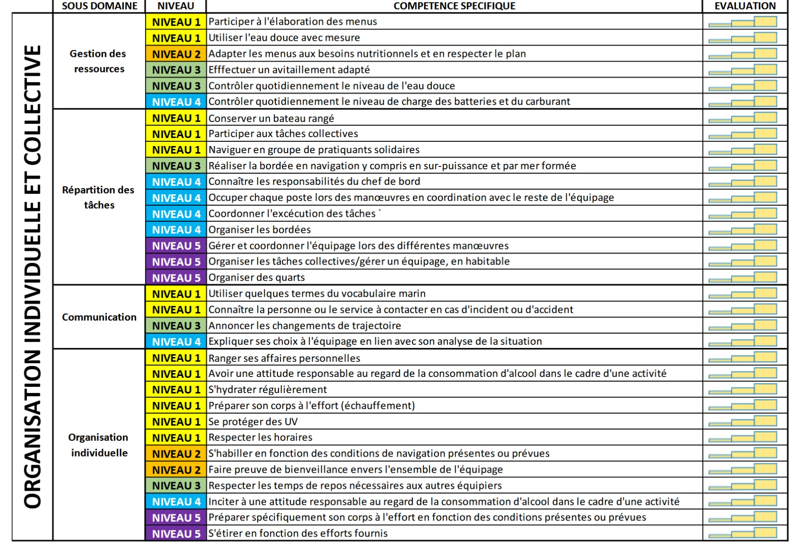
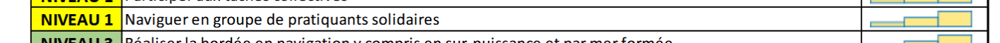
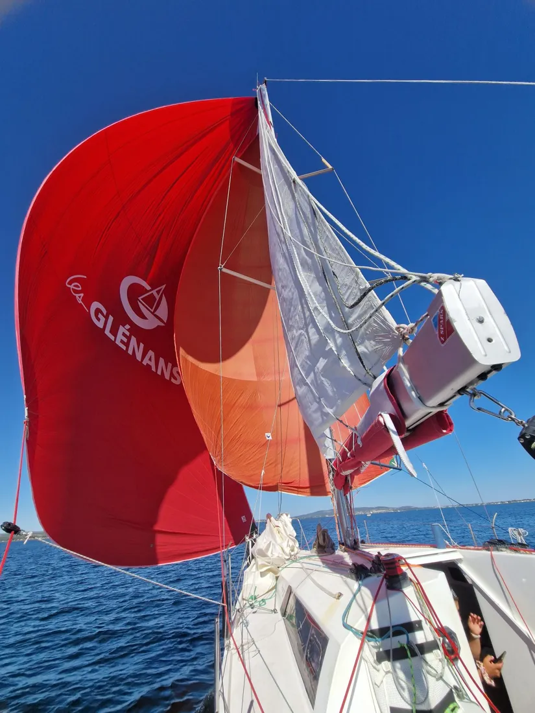
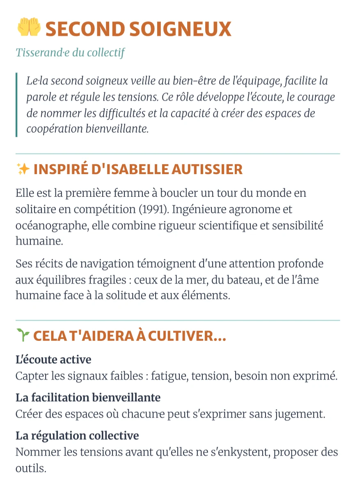
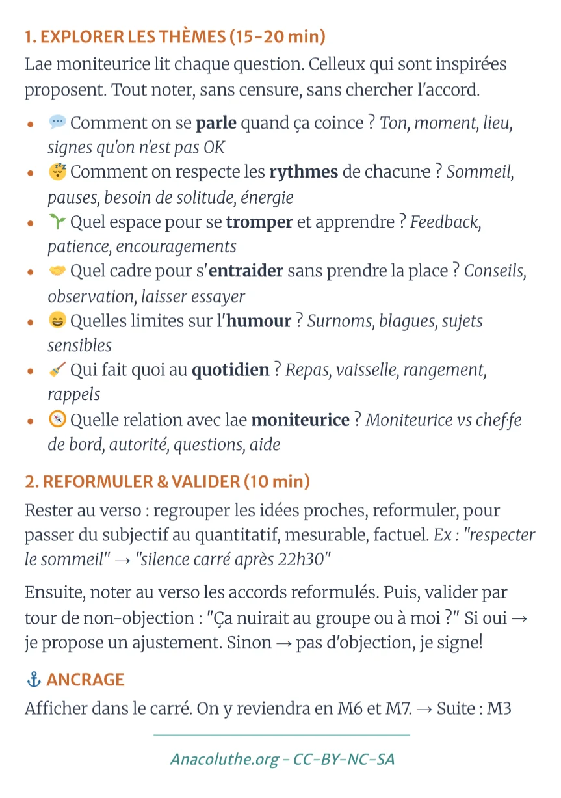
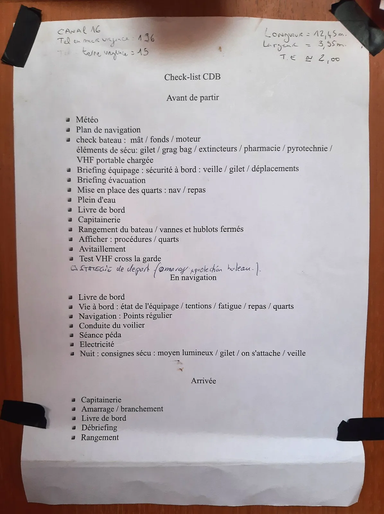

¿¡ Anacoluthe !?
Soutenance UC1-UC2 · BPJEPS voile habitable
Comment donner aux moniteurices
les moyens d'animer le vivre-ensemble
dans un contexte qui génère autant de tensions
que d'opportunités d'apprentissage ?
D'où vient cette question ?

Les échanges avec Romain Gauvrit
responsable croisière
à venir
Les rapports de mer
des tensions humaines
qui finissent en incidents techniques

Mon encadrement bénévole en croisière
et ce que j'y ai observé de la coopération
Pour la technique : cartes de progression, manuel, fiches. Pour le vivre-ensemble, très peu d'outils.
Ce que les référentiels demandent déjà
Les stagiaires · carte de progression FFVoile



Les moniteurices · CQP-IV


Ces compétences figurent déjà au programme. Le projet donne des outils pour les travailler.
« … par la mer, … à la vie collective »


Extraits des statuts des Glénans.

Le terrain




La voile habitable à Marseillan, par an : environ 2 000 stagiaires, une centaine de moniteurices, 12 à 14 voiliers.
Trois publics, reliés
Les encadrants des moniteurices
RTQ, responsables croisière
être moins sollicités sur les tensions, pour accompagner les moniteurices
Les moniteurices
débutantes et expérimentées
animer le vivre-ensemble et l'enseigner
Les stagiaires
six jours à bord, en équipage
apprendre à coopérer en même temps qu'à naviguer
Le projet s'adresse aux trois, et s'appuie sur ce qui les relie.
Deux moniteurices types
en FPI ou juste après
La débutante
s'organiser, se faire aider par son équipage
« Je sens bien quand ça coince, mais je ne sais pas toujours comment relancer sans être maladroit. »
dans le kit : affiches et rôles
parfois de mauvaises habitudes
L'expérimentée
aller plus loin, être légitime sur l'animation au-delà de la technique
« Les stagiaires me respectent pour la manœuvre, mais dès qu'il s'agit de gérer un conflit, je perds mes moyens. »
dans le kit : moments et jokers
Portraits composites, verbatims tirés des entretiens du diagnostic. Ce qui les distingue : l'habitude et la compétence, pas le statut ni la fréquence d'encadrement.
Qui a fait quoi
Quatre phases

Phase 1 · diagnostic
Faire avec, dès le diagnostic
Ateliers de diagnostic et de co-conception · 3 ateliers pair-à-pair de 1 h 30 · 2 à 3 moniteurices · ils produisent la V1
À l'issue, la moniteurice est capable de
- nommer une tension vécue à bord et en décrire les effets
- distinguer l'organisation du bord et la relation
- formuler ce qui lui manque pour agir
- prototyper une réponse avec ses pairs, et la défendre devant eux
Intentions formulées après coup, à partir de ce que les séances ont visé.

Phase 1 · formation
Concevoir l'outil,
c'était déjà former
Ateliers de formation à l'animation du vivre-ensemble · 3 sessions de 2 h · 8 moniteurices · le premier support
À l'issue, la moniteurice est capable de
- relier les constats du diagnostic à sa propre pratique
- parler du vivre-ensemble avec un vocabulaire commun
- choisir ce qu'elle mettra en œuvre sur son prochain stage
- tester un support à blanc et en faire une critique utile
La production est le support, la formation l'effet visé. Intentions formulées après coup.

Phase 2 · conception itérative
Tester en stage, avec les stagiaires
Chaque test en stage est un face-à-face avec un équipage.
Pépite · rôle
Le second soigneux pour les stagiaires les plus curieux : un rôle qui n'existait pas à bord, qui ouvre la co-animation du débriefPépite · joker
Demande-retour moniteurice pour les stagiaires, et pour les moniteurices qui ne s'intéressent pas au dispositif : parfois, c'est la moniteurice le problème à régler

Phase 3 · la débutante
L'atelier FPI2
Le meilleur moment pour parler d'animation du vivre-ensemble avec des débutantes : pendant leur formation.
Pépite · affiche
Les routines quotidiennes s'organiser, et se faire aider par l'équipage. Les rôles prennent le relais.À compléter : autres actions vers la débutante, déroulé de l'atelier FPI2.

Phase 3 · l'expérimentée
Les ateliers du vendredi
- Partir de leurs situations réelles : arpentage, co-développement, apports sur la coopération
- Quatre ateliers de 2 h, annoncés le samedi au démarrage des stages
Pépite · moment
Les accords d'équipage un moment crucial et obligatoire, où même les habituées sont souvent démunies. Les jokers vont plus loin.À compléter : intentions pédagogiques des ateliers du vendredi, sur le modèle de la phase 1.


Phase 3 · les encadrants
Outiller le brief
RTQ et responsables croisière briefent les moniteurices chaque samedi.
- des briefs sur ce qui se passe dans le projet
- des briefs de démarrage et de déploiement testés avec eux, qui intègrent et présentent le dispositif
- une formation au kit, pour mieux en parler aux moniteurices
À compléter : à quelle phase chaque action, et ce qu'ils en ont fait.

Après le projet,
ce qui reste
- Une partie des supports de démarrage de stage rénovés
- Huit bateaux équipés durablement : affiches collées, kits complets dans la table à carte
- Des kits et de la documentation en ressourcerie, aux côtés des autres supports

L'écart au prévu
Ce qui explique l'écart
- ma disponibilité hors face-à-face
- des leviers d'accès saturés, dont le brief du samedi
- une inertie de calendrier
- ateliers du vendredi
- atelier FPI2
- accompagnements individuels
- apports dans les briefs de démarrage
- matériaux distribués rénovés
Les tensions se disent plus tôt, l'équipage est plus autonome
La parole
« Les tensions ont été exprimées avant de dégrader le climat »
5 moniteurices sur 6 le constatent aussi.
L'organisation
« Les moments d'organisation ont été fluides »
Pour que ça marche des outils et des encadrant·es formé·es. Sans sensibilisation - formation, le kit reste souvent dans la table à cartes.
Ce que je préconise
« En 2035, l'association Les Glénans est un lieu d'expérimentation de nouveaux possibles »
Cap à dix ans voté par le conseil d'administration, novembre 2025 : autonomie et interdépendance par la navigation, faire société.
À développer : pour chaque préconisation, qui, quoi, quand, avec quels moyens. Court, moyen, long terme.
Bilan pour moi
Ce que ça m'a appris → ce que je ferais autrement
- J'ai sous-estimé la conduite au profit de la conceptionchiffrer dès le départ le temps de formation
- Ma disponibilité a fait exister le projet, sans pouvoir se transmettremettre davantage d'énergie dans le plaidoyer en interne
- Un projet d'animation se conduit comme un processus sociall'informel d'abord, avec les salariés et le CEB
Et ensuite